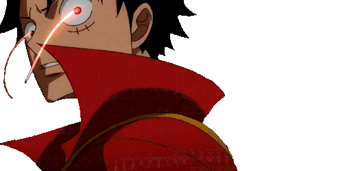
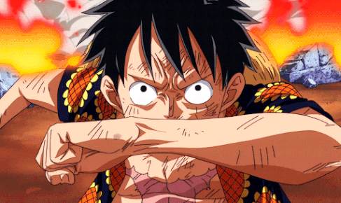
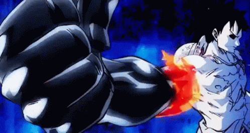
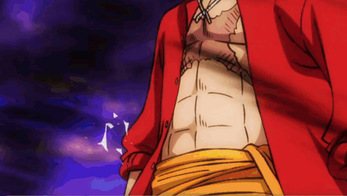

Haki
"Haki" is a power that lies dormant in all the world's creatures...
"Presence", "fighting spirit" and "intimidation"... It is not different
from the things that humans can naturally sense such as these... 'The act
of not doubting'. That is strength!
Haki is a mysterious power that allows individuals to harness their own
spiritual energy for various superhuman feats. As this energy manifests
from willpower, it is theoretically open to all of the world's living
creatures; the vast majority, however, are either ignorant of how to
unlock it or unable to achieve mastery. Haki users are common in the New
World, rare in Paradise, and virtually non-existent in the Four Blues.
Current understandings of Haki define three distinct types, each tied to a
different ability: sensing others' spiritual energy to anticipate their
movements, producing a protective coating of energy from one's own body,
and—for a certain group of "chosen ones"—overwhelming the willpower of
others.
Haki and its users have underpinned many significant events throughout the
series—notably, Shanks used it to drive off the Lord of the Coast and save
a young Monkey D. Luffy's life. The term "Haki" was first used much later
when Blackbeard was commenting on Luffy's bounty in Jaya, and was hinted
at during Shanks' visit with Whitebeard. The underlying concepts of Haki
were introduced during the Sabaody Archipelago and Amazon Lily Arcs. The
concept was clearly explained later on by Rayleigh to Luffy at the start
of the latter's training on Rusukaina Island.
Observation Haki

Observation Haki (見聞色の覇気, Kenbunshoku no Haki?), which gives the
user a sixth sense of the world around them, allowing them to sense the
presence, strength, and emotions of other people, even if they are out of
sight or far away. It also grants limited precognitive abilities, allowing
the user to sense their opponents' intentions and predict their actions
and attacks before they happen.
An advanced level of Observation Haki allows the user to actually foresee
a short period into the future.
Armament Haki

Armament Haki (武装色の覇気, Busōshoku no Haki?), which allows the user to
use their own aura as armor to defend against attacks, as well as make
their own attacks more potent. It can also be used to bypass Devil Fruit
defenses, such as the intangibility of a Logia. A person can apply the
armament to a section of their body, over their entire body, and even
imbue it onto their weapons. A coating of Armament Haki will cause the
coated area to turn a shiny black, and a particularly thick and powerful
coating will have a flame-like pattern along its edge.
An advanced level of Armament Haki allows the user to emit the armament a
short distance without a medium.
A higher grade of advanced Armament Haki allows the user to make the
emitted armament flow into a target's body and destroy it from the
inside-out.

Supreme King Haki

Supreme King Haki (覇王色の覇気, Haōshoku no Haki?), which grants the user
the ability to unleash their own willpower in order to overpower the will
of others. This results in victims being mentally overwhelmed by the user,
with particularly weak-willed foes instantly losing consciousness. It can
also apply pressure onto objects and damage them, a clash between two
particularly strong Supreme King Haki users is capable of "splitting the
heavens". Unlike the other types of Haki which can be learned by anyone,
Supreme King Haki is a rare ability that only one in several million
people are born with the ability to use.
An advanced level of Supreme King Haki allows the user to infuse their
conquering spirit into their weapons and physical attacks, greatly
augmenting their power. Only a small handful of the most powerful Supreme
King Haki users are able to achieve this.
Another advanced level of Supreme King Haki allows for the ability to
manipulate one's aura or presence, which negates an opponent's ability to
sense the user with Observation Haki.

Back Home